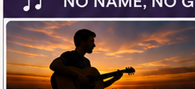
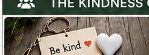

📖 THE STORY
Read the story, learn new vocabulary and complete engaging tasks.
START READINGA story about kindness in the digital age — and a song about the quiet joy of giving without being seen.
Read the story, learn new vocabulary and complete engaging tasks.
START READINGWatch a short video that introduces the story.
WATCH VIDEOReading audio
Listen to the story while following the text.
New assembled recording · 3:13
It started with small things.
An elderly woman in a small town found a bag of groceries on her doorstep. No note. No name. Just food.
A single mother received an envelope with cash and a short message: “For your son's school trip. He deserves it.”
A struggling student opened his email to find that someone had paid for his online course. The receipt showed a gift card, no name.
People in the town began to talk. Who was helping them? A rich relative? A charity? A ghost?
The local newspaper picked up the story. They called the mysterious helper “The Anonymous Angel.” Articles were written. Interviews were given by grateful recipients. But no one knew who it was.
Then one day, the local computer repair shop owner came forward. He had noticed something strange. Someone had been using a public computer at the library late at night. The searches were all about people in need — single parents, sick children, elderly people living alone.
“Whoever it was,” the shop owner said, “they didn't want to be found.”
A young reporter named Lena decided to investigate. She spent weeks following small clues. Finally, she tracked the helper to a small apartment on the edge of town.
She knocked on the door. A middle-aged man opened it. His clothes were simple. His apartment was small. He looked... ordinary.
“Are you the one?” Lena asked.
The man sighed. “Please, come in. But I won't give you a story.”
His name was Mark. He worked as a warehouse worker. He wasn't rich. He wasn't famous. He just believed in doing good.
“I had a difficult childhood,” he explained. “A stranger once helped my family when we had nothing. I never knew who it was. But it changed my life. Now I have a little extra money. Not much. But enough to help someone else.”
He didn't use his own computer. He used the public library computer so no one could track him. He paid with gift cards. He never left his name.
“But why anonymous?” Lena asked. “People want to thank you.”
Mark shook his head. “If people know who I am, they'll want to thank me. They'll want to repay me. That's not why I do it. I do it because... because I can. Because someone did it for me. The joy is in the helping, not in the recognition.”
Lena didn't write the article. She couldn't betray his trust. But she started volunteering at a local shelter on weekends.
“Some secrets,” she later told a friend, “are worth keeping.”
And the anonymous help continued. Groceries appeared. Bills were paid. Scholarships were funded. The town still talked about their “Angel.” But no one ever found out who it was.
Except Lena. And she never told.
| Word / phrase | American English | Перевод |
|---|---|---|
| anonymous | [əˈnɑːnɪməs] | анонимный |
| doorstep | [ˈdɔːrstep] | порог |
| envelope | [ˈenvəloʊp] | конверт |
| receipt | [rɪˈsiːt] | квитанция, чек |
| charity | [ˈtʃærəti] | благотворительная организация |
| to come forward | [kʌm ˈfɔːrwərd] | выступить с заявлением, объявиться |
| clue | [kluː] | улика, подсказка |
| to track | [træk] | отследить, выследить |
| warehouse | [ˈwerhaʊs] | склад |
| extra | [ˈekstrə] | дополнительный, лишний |
| gift card | [ɡɪft kɑːrd] | подарочная карта |
| to repay | [rɪˈpeɪ] | отплатить, возместить |
| recognition | [ˌrekəɡˈnɪʃn] | признание, известность |
| to betray | [bɪˈtreɪ] | предать |
| trust | [trʌst] | доверие |
| to volunteer | [ˌvɑːlənˈtɪr] | работать волонтёром |
| shelter | [ˈʃeltər] | приют, убежище |
| scholarship | [ˈskɑːlərʃɪp] | стипендия |
| to fund | [fʌnd] | финансировать |
Complete the word families.
| Verb | Noun | Adjective |
|---|---|---|
| to help | ___________ | helpful |
| ___________ | recognition | recognized |
| to volunteer | ___________ | ___________ |
| ___________ | betrayal | ___________ |
Find the word in the text that means:
Complete the sentences with words from the glossary:
Choose ONE:

Song audio · 3:26
Listen to the song and follow the lyrics in English and Russian.

Class project: “The Kindness Chain”
Type: Kindness action + reflection Duration: 1 week
Integration: English + social responsibility + emotional intelligence